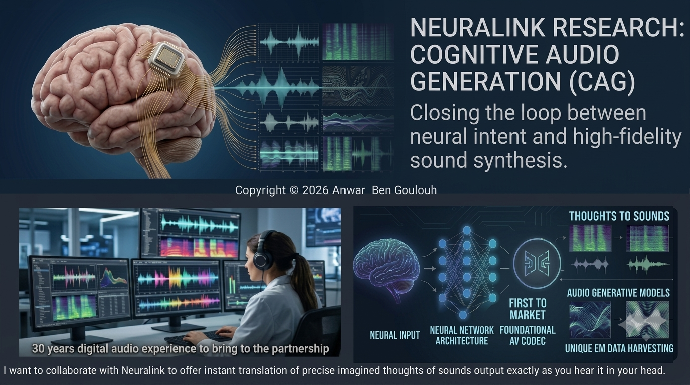

Humble Offerings
Projects
2026 - NEURALINK CAG - Cognitive Audio Generation a Whitepaper Proposal.pdf
Targeted at Neuralink - Outlining a Next-Gen Audio Native approach to Brain Computer Interfaces With a personal narrative that tells my story and how I hope to work with the Neuralink experts.
I propose "Cognitive Audio Generation" (CAG) for Neuralink—a BCI technology designed to translate thought directly into high-fidelity sound. By solving key neurological data harvesting and decoding challenges to establish a foundational industry leading Audio Codec. If successful the payoff is hard to encompass with a fundamental change in the way humans could communicate. A technology that will definitely happen in future that is not currently a focus, that will require years of work for a P.O.C

2025 - WEGEN-MHD - Wave Energy Electrical Generation. Based on Magneto-HydroDynamics Theory.
Targeted at Regional & National Power Grid Infrastructure. Using very well understood dynamics of conductive liquids within an electromagnetic field
WEGEN-MHD.pdf2026 - On-Chain AI Price Prediction Model on Solana
A fully on-chain AI model running on Solana. 65 bytes of weights, 59.2% accuracy, ~$0.002 per inference. This is a proof of concept exploring the limits of on-chain machine learning. The entire model (weights, computation, inference) lives on Solana. No off-chain oracles. No external APIs. Pure blockchain execution.
WEGEN-MHD.pdf